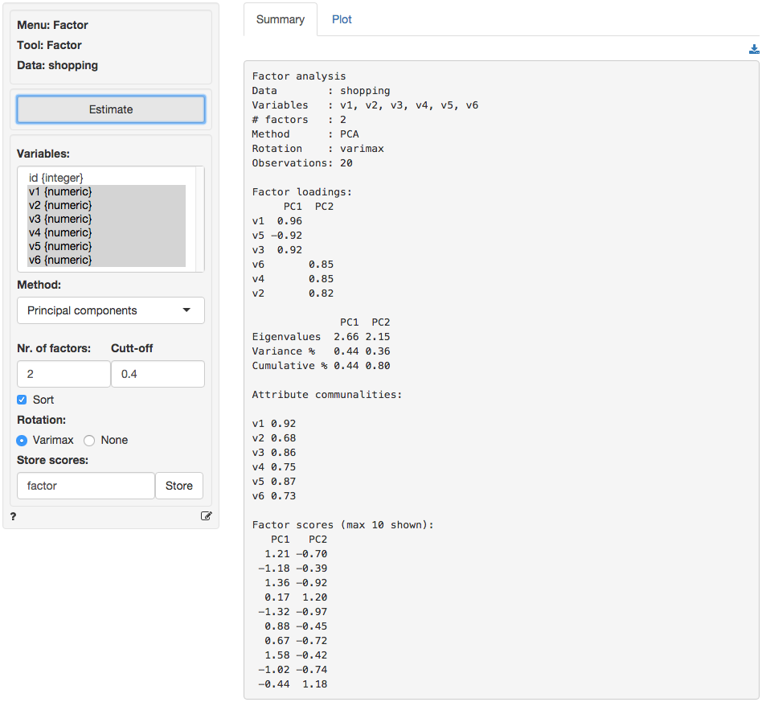

Factor > Factor
Reduce data dimensionality without significant loss of information
As stated in the documentation for pre-factor analysis, the goal is to reduce the dimensionality of the data without significant loss of information. The tool tries to achieve this goal by looking for structure in the correlation matrix of the variables included in the analysis. The researcher will usually try to link each of the original variables to an underlying factor and then provide a descriptive label for each factor (i.e., a name).
Example: Toothpaste
Click the ‘examples’ radio button on the Data > Manage page and click ‘Load examples’ then choose the toothpaste data from the Datasets dropdown. The data set contains information from 60 consumers who were asked to respond to six questions to determine their attitudes towards toothpaste. The scores shown for variables v1-v6 indicate the level of agreement with the statement indicated on a 7-point scale where 1 = strongly disagree and 7 = strongly agree.
Once we have determined the number of factors we can extract and rotate them. The factors are rotated to generate a solution where, to the extent possible, a variable has a high loading on only one factor. This is an important benefit because it makes it easier to interpret what the factor represents. While there are numerous algorithms to rotate a factor loadings matrix the most commonly used is Varimax rotation.

The numbers in the table are the correlations of the six variables with the two Factors. For example, variable v1 has a correlation of .962 with Factor 1 and a correlation of -.031 with Factor 2. As such v1 will play a big role in naming Factor 1 but an insignificant role in naming Factor 2.
The rotated factor loadings will be used to determine labels or names for the different factors. We need to identify and highlight the highest factor loading, in absolute value, in each row. This is easily done by setting the Cut-off value to .4 and checking the Sort box. The output is shown below.
Loadings:
RC1 RC2
v1 0.96
v5 -0.93
v3 0.93
v6 0.88
v4 0.85
v2 0.85Together, the variables shown in each column (i.e., for each factor) will help us to understand what the factor represents. Questions 1, 3 and 5 reflect the importance of health issues while questions 2, 4, and 6 reflect aesthetics issues. Plausible names for the factors might therefor be:
Factor 1: Health benefits Factor 2: Social benefits
The best way to see what rotation does is to toggle the radio buttons Rotation between Varimax and None and inspect what changes in the output. Click on the Plots tab and set the radio button to None. The image shown below depicts the loadings of the variables on the two factors. Variable 5 falls somewhat in between the lines for factor 1 and factor 2. When we select Varimax rotation, however, the label for v5 lines up nicely with the horizontal axis. This change in alignment is also reflected in the factor loadings. The unrotated factor loadings for v5 are -0.869 for factor 1 and -0.351 for factor 2. The rotated factor loadings for v5 are -0.934 for factor 1 and -0.079 for factor 2.


The final step is to generate the factor scores. You can think of these scores as a weighted average of the variables that are linked to a factor. They approximate the scores that a respondent would have provided if we could have asked about the factor in a single question, i.e., the respondents inferred ratings on the factors. By clicking on the ‘Save scores’ button two new variables will be added to the toothpaste data file. You can see them by going to Data > View. We can use factor scores in other analyses (e.g., cluster analysis or regression). You can rename the new variables, e.g., to ‘health’ and ‘social’ through Data > Transform by selecting ‘Rename’ from the Transformation type dropdown.
Summary
- Determine if the data are appropriate for factor analysis using Bartlett, KMO, and Collinearity (Pre-factor)
- Determine the number of factors to extract using the scree-plot and eigenvalues > 1 criteria (Pre-factor)
- Extract the (rotated) factor solution to produce:
- Factor loadings: Correlations between attributes and factors
- Factor scores: Inferred ratings on the new factors (i.e., new variables that summarize the original variables)
- Identify the highest factor loading, in absolute value, in each row (i.e., for each variable)
- Label the factors using the strongest factor loadings
If you want more practice open the ‘shopping’ data set and see if you can reproduce the results shown in the screen capture of the Summary tab below. Use Pre-factor to determine if the correct number of factors were selected. Do you agree? Why (not)?
